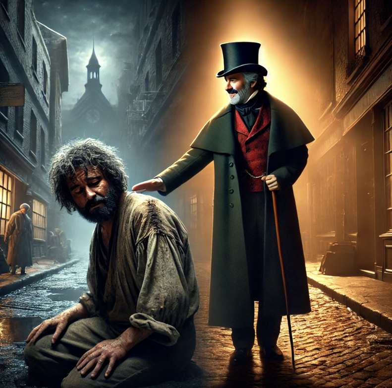

레미제라블
목차
작가
빅토르 위고
출판일
1862년
감상평에 대한 AI그림
장발장 같은 인물이 어떻게 변화하고 성장해나가는지를 보고 나 또한 노력의 중요성을 실감하고 더욱더 노력해야겠다고 다짐했다. 그리고 19세기 프랑스 사회를 바탕으로 한 소설이여서 그 당시의 사회를 더욱더 입체적으로 들여다볼 수 있었던 것 같다.

감상평에 대한 AI평가
~~~~AI평가~~~~~
✨이 글은 장발장의 변화와 성장을 통해 노력의 중요성을 깨닫고 스스로도 더 노력해야겠다고 다짐하는 진지한 태도를 담고 있어 긍정적인 인상을 줍니다. 또한, 19세기 프랑스 사회를 입체적으로 이해할 수 있었다는 점에서 작품을 깊이 있게 받아들였다는 점이 돋보입니다.
다만, 문장에서 약간의 어색한 표현과 반복적인 단어 사용이 있어 조금 더 자연스럽게 다듬으면 더욱 매끄럽고 설득력 있는 문장이 될 것 같습니다. 예를 들면
"장발장 같은 인물이 변화하고 성장하는 모습을 보며 노력의 중요성을 다시금 깨닫고, 나 또한 더욱더 노력해야겠다고 다짐했다. 또한, 이 소설이 19세기 프랑스 사회를 배경으로 하고 있어 그 시대를 더욱 입체적으로 이해할 수 있었다."
이렇게 표현하면 문장이 더 자연스럽고 간결해집니다. 😊